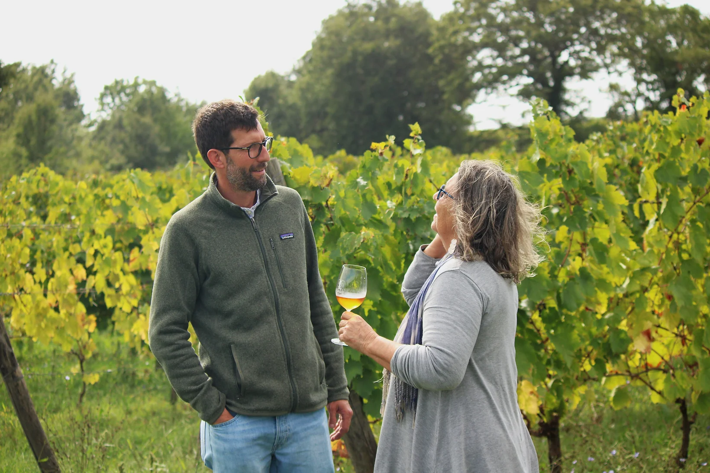

 What was supposed to be a “buen retiro” for our retirement years became the focal point of our passion for this land. Originally from Milan and with professional backgrounds in urban planning and architecture, we bought an old country farmhouse in 1988 that came with 9 hectares of land, a vineyard, olive trees and arable land. With the help of Giovanni, a local farmer who taught us his trade, we were “commuting farmers” for a few years, travelling back and forth between Milan and Capalbio as required by the rhythms of agricultural life. Then one day, in 1992, we took the big leap: we left behind foggy Milan and headed for the sun and the hard but rewarding work of the Maremma countryside. If you call in at the farm, you’ll find Corinna in the tasting room or busy with invoices and administrative work, and Beniamino either bottling and racking wine in the cellar or on his tractor in the vineyard.